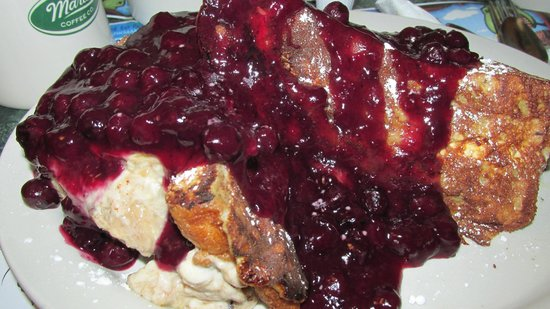

<!DOCTYPE html>
<html lang="en">
    <head>
        <meta charset="UTF-8">
        <title>Yo Halla on the Square</title>
    </head>
</html>
<body>
    <h1>Yo Halla on the Square</h1>
    
    <h2>Description</h2>
        <p>One of the most decadent breakfast dishes you've ever had! Yo Halla on the Square is made by filling French toast with a banana and cream cheese filling and adding a berry compote on top. Sick dude! Totally baller breakfast! Not like your lamesauce Cheerios! </p>
        <h3>Ingredients</h3>
        <ul>
            <li>5 pounds bananas</li>
            <li>2 oz.margarine</li>
            <li>1 lb. brown sugar</li>
            <li>2 oz. hazelnut liqeur</li>
            <li>1 1/2 lbs. cream cheese</li>
            <li>Fresh challah bread</li>
            <li>...ehh, there are some more ingredients, but don't worry about those</li>
        </ul>
        <h3>Steps</h3>
        <ol>
            <li>Slice the bananas into 1/2 inch wide pieces.</li>
            <li>Heat the margarine in a large saucepan over low heat. Cook the bananas for 3 to 4 minutes, then add the brown sugar and liqeur. Saute for about 3 more minutes. Let it cool.</li>
            <li>Add the cream cheese to a large bowl. Fold in the banana mixture and set aside.</li>
            <li>Slice the bread into 1-inch thick pieces.</li>
            <li>Blah blah blah. Do the rest of the stuff with the rest of the ingredients.</li>
            <li>Serve warm and enjoy!</li>
        </ol>
</body>
